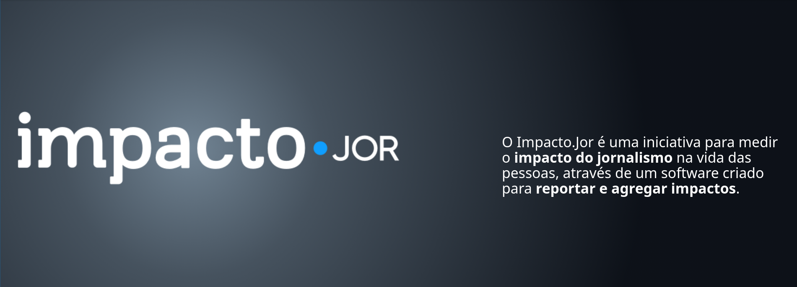

Brasil.IO: Tornando dados públicos acessíveis
Turicas aka Álvaro Justen
Congresso ABRAJI 2018
30 de junho de 2018 - São Paulo/SP
Hello, world
Sigam-me os bons:
{twitter,
github,
youtube,
slideshare,
instagram}
/turicas
turicas@brasil.io

escoladedados.org

impacto.jor.br
Curso pelo Knight Center
Uma História

Acessibilidade dos Dados
Maior parte do tempo dos projetos de análise de dados:


github/turicas/rows

escoladedados.org
rows convert arquivo.pdf arquivo.csv


twitter.com/turicas/status/943176715672711168

twitter.com/turicas/status/959120200976224262

twitter.com/turicas/status/960678777096425472

DEMO
“ Restringir acesso a dados de interesse público é elitizar a democracia. ”